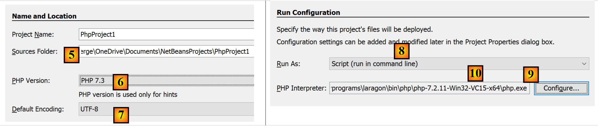
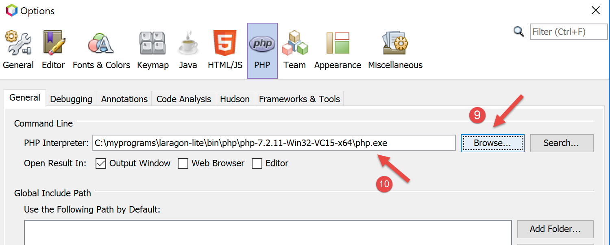
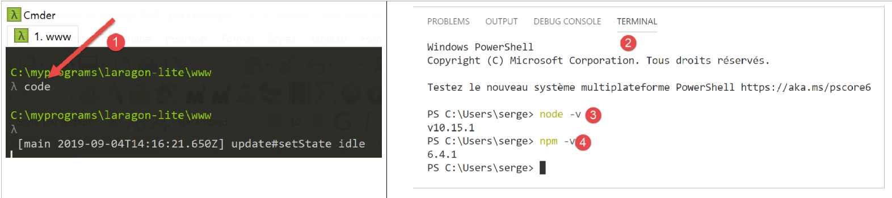
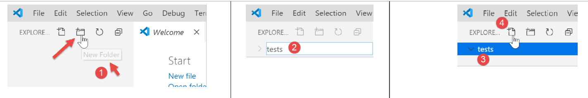
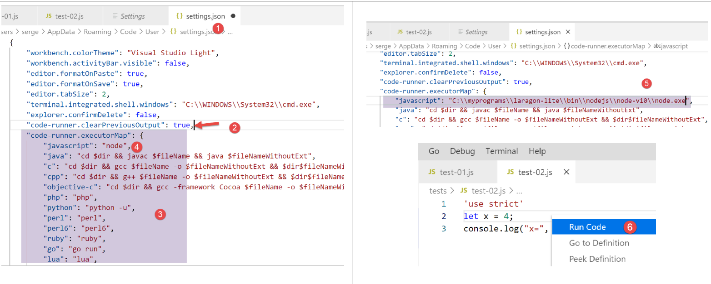

2. Installation d’un environnement de travail
Nous allons utiliser les outils suivants (sous Windows 10 x 64 bits) :
- [Laragon] pour exécuter le serveur web PHP ;
- [Netbeans] pour modifier le code PHP ;
- [Visual Studio Code] pour écrire les codes Javascript ;
- [node.js] pour les exécuter ;
- [npm] pour télécharger et installer les bibliothèques Javascript dont nous aurons besoin ;
2.1. Environnement de travail pour le serveur web
Les scripts PHP ont été écrits et testés dans l'environnement suivant :
- un environnement serveur web Apache / SGBD MySQL / PHP 7.3 appelé Laragon ;
- l'IDE de développement Netbeans 10.0 ;
2.1.1. Installation de Laragon
Laragon est un package réunissant plusieurs logiciels :
- un serveur web Apache. Nous l'utiliserons pour l'écriture de scripts web en PHP ;
- le SGBD MySQL ;
- le langage de script PHP ;
- un serveur Redis implémentant un cache pour des applications web :
Laragon peut être téléchargé (mars 2019) à l'adresse suivante :


- l'installation [1-5] donne naissance à l'arborescence suivante :

- en [6] le dossier d'installation de PHP ;
Le lancement de [Laragon] affiche la fenêtre suivante :

- [1] : le menu principal de Laragon ;
- [2] : le bouton [Start All] lance le serveur web Apache et le SGBD MySQL ;
- [3] : le bouton [WEB] affiche la page web [http://localhost] qui correspond au fichier PHP [<laragon>/www/index.php] où <laragon> est le dossier d’installation de Laragon ;
- [4] : le bouton [Database] permet de gérer le SGBD MySQL avec l’outil [phpMyAdmin]. Il faut auparavant installer celui-ci ;
- [5] : le bouton [Terminal] ouvre un terminal de commandes ;
- [6] : le bouton [Root] ouvre un explorateur Windows positionné sur le dossier [<laragon>/www] qui est la racine du site web [http://localhost]. C’est là qu’il faut placer toutes les applications web gérées par le serveur Apache de Laragon ;
Ouvrons un terminal Laragon [5] :

- en [1], le type du terminal. Trois types de terminaux sont disponibles en [6] ;
- en [2, 3] : le dossier courant ;
- en [4], on tape la commande [echo %PATH%] qui affiche la liste des dossiers explorés lors de la recherche d’un exécutable. Tous les principaux dossiers de Laragon sont inclus dans ce chemin des exécutables, ce qui ne serait pas le cas si on ouvrait une fenêtre de commandes [cmd] dans Windows. Dans ce document, lorsqu’on est amené à taper des commandes pour installer tel ou tel logiciel, c’est en général dans un terminal Laragon que ces commandes sont tapées ;
2.1.2. Installation de l'IDE Netbeans 10.0
L'IDE Netbeans 10.0 peut être téléchargé à l'adresse suivante (mars 2019) :
https://netbeans.apache.org/download/index.HTML

Le fichier téléchargé est un zip qu’il suffit de dézipper. Une fois Netbeans installé et lancé, on peut créer un premier projet PHP.

- en [1], prendre l'option File / New Project ;
- en [2], prendre la catégorie [PHP] ;
- en [3], prendre le type de projet [PHP Application] ;

- en [4], donner un nom au projet ;
- en [5], choisir un dossier pour le projet ;
- en [6], choisir la version de PHP téléchargée ;
- en [7], choisir l'encodage UTF-8 pour les fichiers PHP ;
- en [8], choisir le mode [Script] pour exécuter les scripts PHP en mode ligne de commande. Choisir [Local WEB Server] pour exécuter un script PHP dans un environnement web ;
- en [9,10], indiquer le répertoire d'installation de l'interpréteur PHP du package Laragon :

- choisir [Finish] pour terminer l'assistant de création du projet PHP ;

- en [11], le projet est créé avec un script [index.php] ;
- en [12], on écrit un script PHP minimal ;
- en [13], on exécute [index.php] ;

- en [14], les résultats dans la fenêtre [output] de Netbeans ;
- en [15], on crée un nouveau script ;
- en [16], le nouveau script ;
Le lecteur pourra créer tous les scripts qui vont suivre dans différents dossiers du même projet PHP. Les codes source des scripts de ce document sont disponibles sous la forme de l’arborescence Netbeans suivante :

Les scripts de ce document sont placés dans l’arborescence du projet [scripts-console] [1]. Nous allons utiliser également des bibliothèques PHP qui seront placées dans le dossier [<laragon-lite>/www/vendor] [2] où <laragon-lite> est le dossier d’installation du logiciel Laragon. Pour que Netbeans reconnaisse les bibliothèques de [2] comme faisant partie du projet [scripts-console], il nous faut inclure le dossier [vendor] [2] dans la branche [Include Path] [3] du projet. Nous allons configurer Netbeans pour que le dossier [<laragon-lite>/www/vendor] [2] soit inclus dans tout nouveau projet PHP et pas seulement dans le projet [scripts-console] :

- en [1-2], on va dans les options de Netbeans ;
- en [3-4], on configure les options de PHP ;
- en [5-7], on configure le [Global Include Path] de PHP : les dossiers indiqués en [7] sont automatiquement inclus dans le [Include Path] de tout projet PHP ;

- en [9], on accède aux propriétés de la branche [Include Path] ;
- en [10-11], les nouvelles bibliothèques explorées par Netbeans. Netbeans explore le code PHP de ces bibliothèques et mémorise leurs classes, interfaces, fonctions… afin de pouvoir proposer de l’aide au développeur ;

- en [12], un code utilise la classe [PhpMimeMailParser\Parser] de la bibliothèque [vendor/php-mime-mail-parser] ;
- en [13], Netbeans propose les méthodes de cette classe ;
- en [14-15], Netbeans affiche la documentation de la méthode sélectionnée ;
La notion d’[Include Path] est ici propre à Netbeans. PHP a également cette notion mais ce sont a priori deux notions différentes.
Maintenant que l'environnement de travail a été installé, nous pouvons aborder les bases de PHP.
2.2. Environnement de travail pour JavaScript
Ces outils peuvent être installés à partir de Laragon (cf. paragraphe lien) :

En [4], on installe [node.js]. Une fois l’installation terminée, on ouvre un terminal Laragon (cf. paragraphe lien) et on demande la version de [node.js] installée (1) ainsi que celle de [npm] (2) :

Ensuite nous installons Visual Studio Code appelé fréquemment [code] ou [VSCode] [3-6]. Ceci fait, nous pouvons lancer cet outil de développement :


2.2.1. Configuration de Visual Studio Code
Nous montrons maintenant comment nous avons configuré [VSCode] afin que le lecteur comprenne les copie d’écran qui apparaîtront de temps en temps. Le lecteur est lui libre de configurer [VSCode] comme il l’entend. Il peut même installer son environnement de travail favori. Celui-ci importe peu pour ce que nous allons faire par la suite.
Tout d’abord, nous changeons l’apparence de la fenêtre [VSCode] pour avoir un fond clair plutôt que noir :

Puis nous cachons la barre de gauche [1-2] dont les éléments sont également disponibles dans le menu. En [3-6], nous demandons un formatage du code à chaque sauvegarde du fichier et à chaque copier / coller.

Après avoir sauvegardé la configuration [Ctrl-S], on peut fermer la fenêtre [Settings] [7]. On peut revenir à tout moment à la configuration de [VSCode] [8-10] :

Ces configurations sont sauvegardées dans un fichier [settings.json] que l’on peut éditer directement. Ouvrons la fenêtre de configuration [Settings] comme il a été vu :

En [4], on peut éditer directement le fichier [settings.json] :

- en [1], le chemin du fichier [settings.json]. Une façon de revenir à la configuration par défaut est de supprimer ce fichier ;
- en [2], les configurations que nous venons de faire ;
Maintenant, ouvrons un terminal à l’intérieur de [VSCode] [1-2] :

- en [3], le type de terminal ouvert, ici PowerShell ;
- en [4], on peut taper des commandes Windows ;
- en [6], on peut ouvrir d’autres terminaux ;
- en [5], la liste des terminaux ouverts ;
- en [7], supprime le terminal actif ;
Nous utiliserons le terminal de [VSCode] pour installer des packages (bibliothèques) Javascript avec l’outil [npm] (Node Package Manager). Demandons, comme nous l’avons fait précédemment dans un terminal Laragon, la version de [npm] installée :

On voit que la commande [npm] n’a pas été reconnue. Cela signifie qu’elle n’appartient pas au PATH (liste des dossiers à explorer pour chercher un exécutable, ici [npm]) du terminal. On peut connaître le PATH utilisé par le terminal :

L’exécutable [npm] ne se trouve pas parmi ces dossiers. Comme les autres outils installés par Laragon, il se trouve dans le dossier [<laragon>\bin] de Laragon et plus précisément dans le dossier de [nodejs] [4-6].

Pour lancer [VSCode] et avoir accès à [npm], nous lancerons [VSCode] à partir d’un terminal Laragon. Lancé de cette façon, [VSCode] va hériter du PATH du terminal Laragon qui lui, contient le dossier des exécutables [node] et [npm] :

- en [1] : on tape la commande [path] ;
- en [2] : la liste des dossiers du PATH. On y voit le dossier [node-v10] [2], ce qui nous garantit que les exécutables [node] et [npm] seront trouvés ;
[VSCode] est lancé à partir d’un terminal Laragon avec la commande [code] :

- en [2], on ouvre un terminal PowerShell dans [VSCode] ;
- en [3-4], on voit que les exécutables [node] et [npm] sont accessibles ;
Note : il ne faut pas fermer le terminal Laragon qui a lancé l’environnement de développement [VSCode], sinon VSCode lui-même se ferme.
Nous allons faire une dernière configuration : nous allons changer le terminal par défaut de [VSCode] :


Le fichier [settings.json] se met aussitôt à jour :

Maintenant, ouvrons un nouveau terminal [VSCode] [1] :

- en [2], un terminal [cmd] (pas PowerShell) ;
- en [3], la commande [path] donne le PATH du terminal ;
- en [4], on y voit bien le dossier des exécutables [node] et [npm]
2.2.2. Ajout d’extensions à Visual Studio Code
Créons un fichier Javascript avec [VSCode] :


- en [3-4], on crée un dossier ;
- en [5], on en fait le dossier courant de [VSCode] ;
- en [6], on ouvre un terminal ;
- en [7], on voit qu’on est positionné sur le dossier choisi. Les opérations à suivre vont se faire dans celui-ci ;

- en [1-3] : on crée un nouveau dossier ;
- en [4] : on ajoute un fichier dans ce dossier ;

- en [5-7] : on crée notre 1er programme Javascript ;

- en [8-9] : on exécute le programme Javascript ;
- le résultat apparaît dans la console d’exécution [10]. On voit en [11] la commande qui a été exécutée : c’est l’application [node] qui a exécuté le script [test-01.js]. C’est parce que cet exécutable est dans le PATH de [VSCode] que cela a pu être possible, sinon on aurait eu une erreur indiquant que la commande [node] n’était pas connue ;
Procédons de la même façon pour exécuter un second script [test-02.js] :

- en [1-3], on définit le nouveau script. L’instruction [use strict] de la ligne 1 demande une vérification stricte de la syntaxe. Dans ce contexte, toute variable doit être déclarée avec l’un des mots clés [let, const, var]. Ce n’est pas le cas de la variable [x] de la ligne 2 ;
- lorsqu’on exécute ce code par [Ctrl-F5], on obtient l’erreur [5]. Il est possible d’être averti de ce type d’erreur avant l’exécution. C’est préférable. Nous allons faire deux choses :
- installer avec [npm] une bibliothèque appelée [eslint] qui vérifie que la syntaxe du script est conforme à la norme ECMAScript 6 ;
- installer une extension à Visual Studio Code, appelée elle-aussi ESLINT qui facilite l’utilisation de la bibliothèque [eslint] au sein de [VSCode] ;
Installons tout d’abord la bibliothèque Javascript [eslint] à l’aide de l’outil [npm]. Pour installer une bibliothèque (on dit un package) [npm], il faut connaître son nom exact. Si ce n’est pas le cas, on peut aller sur le site de [npm] à l’URL (2019) [https://www.npmjs.com/] :

- en [3], les packages commençant par [esl] ;
- en [4-6], on trouve le package [eslint] ;

- en [7], la commande [npm] pour installer le package [eslint] ;
- en [8], la configuration du package ;
- en [9], son utilisation pour vérifier la syntaxe d’un script Javascript ;
Nous installons le package [eslint] dans une fenêtre [Terminal] de [VSCode]. Tout d’abord, il nous faut créer un fichier [package.json] à la racine du dossier de travail de [VSCode]. Ce fichier contiendra la liste des packages jS utilisés par le projet [VSCode] :

- en [1], cliquer droit dans l’explorateur de projet (pas sur le dossier tests) ;
- en [3-4], on crée le fichier [package.json] à la racine du projet [javascript], au même niveau que le dossier [tests] (mais pas dans [tests]) ;
- en [4-6], on met dans le fichier [package.json] un objet jSON vide ;
Puis on ouvre un terminal [VSCode] pour installer [eslint] :

- en [2], on est à la racine du projet [javascript] ;
- en [3], la commande qui installe le package [eslint] ;
- après exécution,
- en [4-5], le fichier [package.json] a été modifié. Ligne 3, on trouve la version de [eslint] installée. Ligne 2, [devDependencies] correspond à l’argument [--save-dev] de l’installation. Cet argument signifie que la dépendance installée doit être inscrite dans le fichier [package.json] comme élément de la propriété [devDependencies]. Cette propriété liste les dépendances du projet dont on a besoin en mode développement mais pas en mode production. En effet, on a besoin de la dépendance [eslint] uniquement en développement pour vérifier que le code écrit respecte la norme ECMAScript ;
- en [6], un dossier [node_modules] est apparu dans le projet. C’est le dossier où sont installées les dépendances du projet ;

- en [7], une partie des packages installés. Ceux-ci sont très nombreux. En effet, non seulement le package [eslint] a été installé mais également tous les packages sur lesquels celui-ci s’appuie ;

- [1-2], dans un terminal [VSCode] on émet la commande de configuration du package [eslint]. Celle-ci va poser diverses questions [3] pour savoir comment on souhaite utiliser [eslint]. Dans le doute, laissez les options proposées par défaut. Pour sélectionner une option, utilisez les flèches haute et basse du clavier pour choisir l’option puis validez celle-ci ;
- en [4], un fichier [.eslintrc.js] a été créé à la racine du projet ;
- en [6], le contenu du fichier. Vous pouvez en copier le contenu dans votre propre fichier ;
module.exports = {
"env": {
"browser": true,
"es6": true
},
"extends": "eslint:recommended",
"globals": {
"Atomics": "readonly",
"SharedArrayBuffer": "readonly"
},
"parserOptions": {
"ecmaVersion": 2018,
"sourceType": "module"
},
"rules": {
}
};
Tout ceci n’est pas suffisant pour signaler les erreurs du fichier [test-02.js] :

- il faut taper la commande [2-3] pour que le fichier [tests/test-02.js] soit analysé ;
- en [4], l’erreur sur la variable non déclarée est détectée ;
Nous allons ajouter à [VSCode] une extension qui va permettre de voir les erreurs Javascript en temps réel. Cette extension s’appuie sur le package [eslint] que nous avons installé :

- en [3-5], nous installons l’extension appelée [ESLint] ;

- en [1], une page d’informations sur l’extension nouvellement installée ;
- en [2], on voit que le mode de vérification de [ESLint] est [type], ce qui signifie que la syntaxe des scripts jS sera vérifiée en même temps que la frappe du texte ;
ESLint peut être configuré via le fichier de configuration général de [VSCode] :

- en [6-7], la configuration de [ESLint]. C’est ici que vous pourrez la modifier ;
Revenons maintenant au fichier [test-02.js] :

- en [3-4], les erreurs sur la variable [x] sont désormais signalées ;
- en [5] : le nombre d’erreurs ESLint dans le fichier ;
- en [6], indique que dans le dossier [tests], il y a des fichiers erronés ;
Si on corrige l’erreur, les avertissements d’ESLint disparaissent :

Installons maintenant une extension appelée [Code Runner] :

- une fois installée l’extension [Code-Runner] [1-5], on peut la configurer avec [6-7] (ci-dessus) ;

- en [1-2], les éléments de configuration de [Code-Runner] ;
- en [3], on demande à ce que le terminal de sortie soit nettoyé avant chaque exécution ;
- en [4], on localise l’élément [Executor Map] qui liste les outils d’exécution de différents langages ;
- en [5-6], on copie la configuration dans le presse-papiers ;
- en [7-8], on modifie le fichier [settings.json] ;

- en [2], on ajoute la virgule derrière le dernier élément du fichier [settings.json] [1] ;
- en [3], on colle ce qu’on a copié en [5-6] précédemment : c’est la liste des commandes permettant d’exécuter les différents langages supportés par [VSCode] ;
- en [4], la commande permettant d’exécuter les fichiers Javascript. Celle-ci ne fonctionne que si [node] est dans le PATH de [VSCode]. Si ce n’est pas le cas, on peut mettre le chemin complet de l’exécutable [5] ;
Ceci fait sauvegardons la configuration (Ctrl-S). Avec l’extension [Code Runner], les fichiers Javascript peuvent être exécutés avec un clic droit sur le code [6] (ci-dessus) :

2.2.3. Quelques commandes [VSCode] utiles
- pour formater votre code, cliquez droit dessus [1] ;
- pour fermer les fenêtres ouvertes, cliquez droit sur leurs titres [2-3] ;

- pour afficher une fenêtre particulière [4-5] ;
- pour sauvegarder votre projet (Workspace) [6-9] ;
- pour sauvegarder un projet [10-11] ;


- pour ouvrir un projet [11-16] :

- voir les extensions installées [19-20] :

Nous avons désormais de bons outils pour développer en Javascript. Nous allons maintenant présenter ce langage à l’aide de courts extraits de code. Comme cette présentation se fait à la suite d’un cours PHP, nous ferons parfois des comparaisons entre ces deux langages pour signaler des différences entre eux.